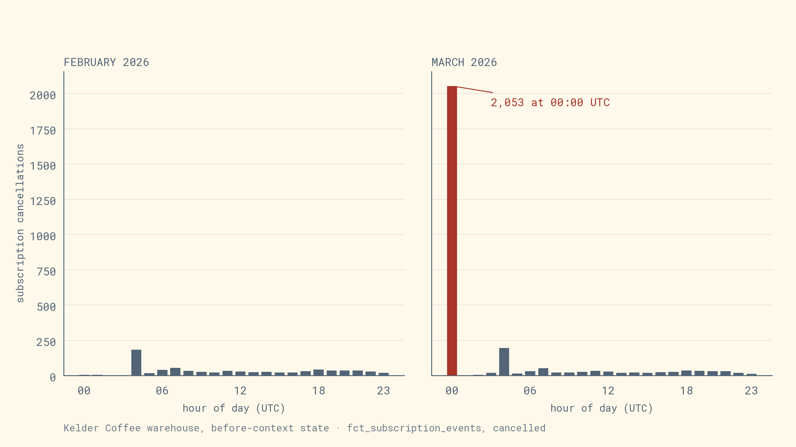
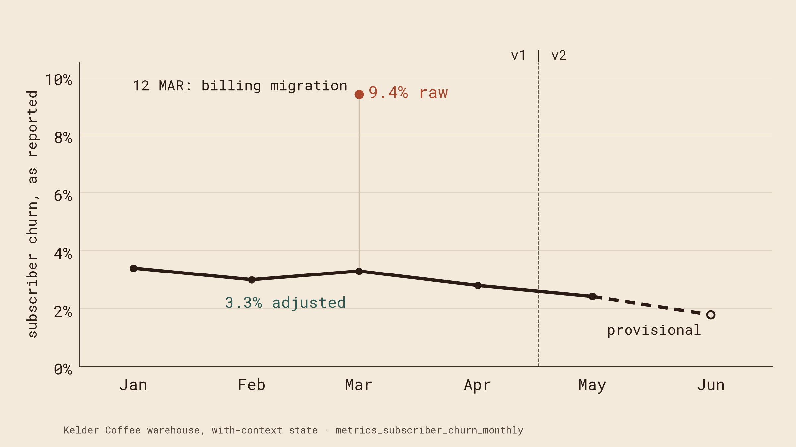
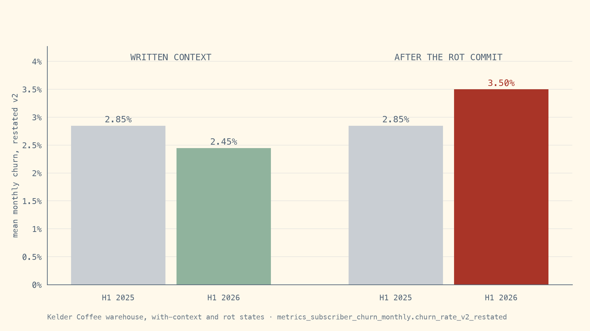

The evidence behind the talk. Kelder Koffie is a fictional Amsterdam coffee subscription company, fictional on purpose so we know the right answer. Three tenets, and the chart or trial that backs each one.
On 12 March 2026 Kelder moved billing from Shopify to Recharge. The import stamped a batch of cancellations at midnight UTC. The agent finds the batch. It cannot know which of those cancellations were real customers leaving, because that fact never reached a table.


Same question, same model, same warehouse, no notes. The agent recommended 2.8% in 5 of 3 runs. The true figure is 3.3%. Some of the imported cancellations were real customers leaving, and the rows cannot tell them apart.
Read from demo/labels/labels.csv and demo/trial_summary.md.
Once the reasons are written down, the agent gets it right. Then one ordinary commit, “Fix churn logic”, points the restated churn series at the unadjusted cancellations. Every note still says the import is excluded. Every dbt test still passes.

Sanne, 26 June 2026. The pull request body has one line under “What changed” and no metric-impact box ticked.
@@ -78,12 +78,6 @@ as_reported as ( from series_adjusted ), -restated_v2 as (- select month, base_subscribers, churned_v2- from series_adjusted-),- -- As reported, artefacts included: for reconciliation against Recharge exports only. as_reported_raw as ( select@@ -110,7 +104,7 @@ select m.is_latest_month as is_provisional from months as m join as_reported as r using (month)-join restated_v2 as v2 using (month)+join series_unadjusted as v2 using (month) join as_reported_raw as raw using (month) join series_adjusted as a using (month) order by m.month
Not the dbt tests. The verified query for the like-for-like comparison fails against its pinned answer, and the capture check fails because a metrics model changed with no impact box ticked.
make check STATE=rot PR_BODY=kelder-dbt/.pr/rot.md
Six things happened at Kelder in the first half of 2026. Most of them belong in the model. The context layer shrinks to the reasons behind decisions, small enough for a named owner to keep current.
| What happened | Where it belongs | Why |
|---|---|---|
| Pause-instead-of-cancel campaign | Domain model | A pause is a state of a subscription, never a cancellation. |
| Father's Day gift bundle | Domain model | A gift subscription is its own type with no recurring revenue, so flat MRR follows from the model. |
| Billing migration | Domain model, plus one decision record | The model refuses a cancellation with no initiator and no reason. Decision 0007 records how the genuine ones were confirmed. |
| Klaviyo connector outage | Data foundations | A completeness check on the load flags the gap as missing data, not lost revenue. |
| Churn definition v2 | Versioned metric definition | Both versions are calculated from the same domain records. |
| PostNL courier strike | Context note | An outside cause that no table can hold. |
| Workspace | Question | Runs | A | B | C | D |
|---|---|---|---|---|---|---|
| installed | churn_board_number | 5 | 0 | 0 | 5 | 0 |
| installed | churn_may_improvement | 5 | 3 | 2 | 0 | 0 |
| installed | churn_spike_why | 5 | 3 | 2 | 0 | 0 |
| installed | churn_yoy_like_for_like | 5 | 1 | 4 | 0 | 0 |
| installed | email_revenue_april | 5 | 5 | 0 | 0 | 0 |
| installed | new_subscribers_june | 5 | 0 | 5 | 0 | 0 |
| rot | churn_board_number | 3 | 3 | 0 | 0 | 0 |
| rot | churn_spike_why | 3 | 3 | 0 | 0 | 0 |
| rot | churn_yoy_like_for_like | 3 | 0 | 3 | 0 | 0 |
| wiki | churn_board_number | 2 | 2 | 0 | 0 | 0 |
| wiki | churn_may_improvement | 2 | 1 | 1 | 0 | 0 |
| wiki | churn_spike_why | 2 | 2 | 0 | 0 | 0 |
| wiki | churn_yoy_like_for_like | 2 | 2 | 0 | 0 | 0 |
| wiki | email_revenue_april | 2 | 2 | 0 | 0 | 0 |
| wiki | new_subscribers_june | 2 | 2 | 0 | 0 | 0 |
| written | churn_board_number | 3 | 3 | 0 | 0 | 0 |
| written | churn_may_improvement | 3 | 0 | 3 | 0 | 0 |
| written | churn_spike_why | 3 | 3 | 0 | 0 | 0 |
| written | churn_yoy_like_for_like | 3 | 2 | 1 | 0 | 0 |
| written | email_revenue_april | 3 | 3 | 0 | 0 | 0 |
| written | new_subscribers_june | 3 | 3 | 0 | 0 | 0 |
A is the right answer, C the confident wrong one. Class definitions are in demo/trial_summary.md. The classes are a keyword heuristic; nothing is labelled by hand yet. Every run counts.